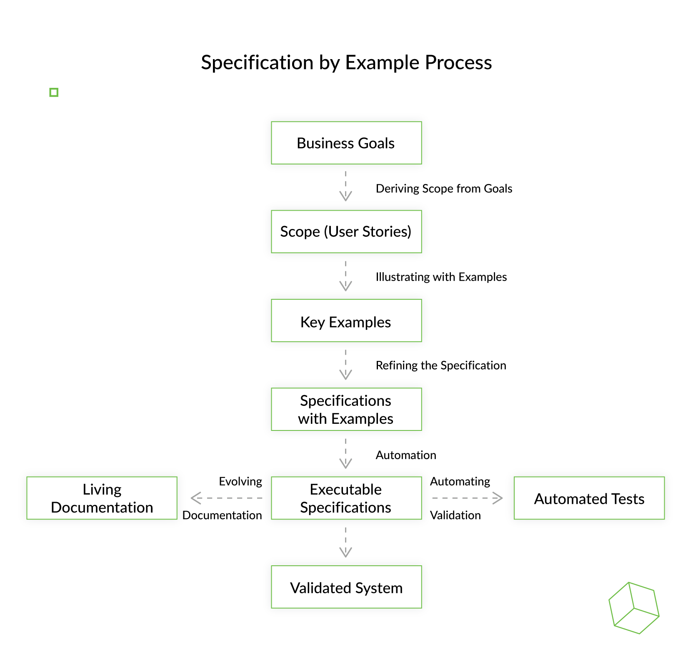

Specification by example (SBE) on koostööpõhine lähenemine tarkvaratoodete nõuete ja ärile
suunatud funktsionaalsete testide määratlemiseks, mis põhineb nõuete hõivamisel ja
illustreerimisel, kasutades abstraktsete väidete asemel realistlikke näiteid.
Seda rakendatakse agiilsete tarkvaraarendusmeetodite kontekstis.
See lähenemisviis on eriti edukas nõuete ja funktsionaalsete testide haldamisel
suuremahulistes projektides, mille valdkond ja organisatsiooniline keerukus on oluline.

| Head | Halvad |
|---|---|
| Vähendab arusaamatusi: Specification by example aitab arusaamatusi varakult kõrvaldada, kasutades konkreetseid näiteid nõuete selgitamiseks, säästes nii aega ja ressursse. |
Uudsete mõistete mõistmise keerukus: väga abstraktseid või uudseid mõisteid võib olla raske mõista ilma konkreetsete näideteta, mille selgitamiseks võib olla vaja täiendavaid jõupingutusi. |
| Arendab ühist keelt ja ühist mõistmist: See hõlbustab ühise keele väljatöötamist funktsionaalsete meeskondade vahel, tõhustades koostööd ja vähendades suhtlusbarjääre |
Koordineerimine ja sünkroniseerimine: kuigi Specification by example vähendab koordineerimise vajadust, luues ühe tõeallika, nõuab see siiski kõigi sidusrühmade aktiivset koostööd ja osalemist, mida võib olla keeruline hallata. |
| Parandab toote kvaliteeti ja tõhusust: keskendudes käivitatavatele nõuetele ja automatiseerides teste, toob Specification by example kaasa kõrgema tootekvaliteedi, kiirema tööaja ja tegevuste parema ühtlustamise erinevate rollide vahel. |
Esialgne seadistamine ja väljaõpe: Specification by example rakendamine võib nõuda esmast väljaõpet ja seadistamist, eriti meeskondade puhul, kes ei tunne koostööpõhiseid spetsifikatsioonitehnikaid. |
| Parandab koostööd: see edendab koostööd ärikasutajate ja tarnemeeskonna liikmete vahel, tagades, et kõik jagavad vastutust täpsete spetsifikatsioonide eest. |
|
| Elav dokumentatsioon: selle lähenemisviisi tulemuseks on elav dokumentatsioon, mis on täpne, hõlpsasti hooldatav ja objektiivselt testitav, vähendades vajadust vananenud dokumentatsiooni järele. |
|
| Varajane defektide tuvastamine: Näitepõhine spetsifikatsioon võimaldab defekte varakult avastada, automatiseerides aktsepteerimiskriteeriume, nihutades fookuse defektide tuvastamiselt defektide ennetamisele. |